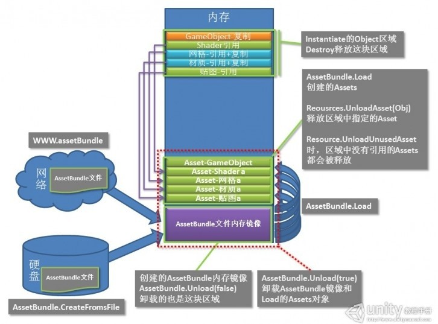

这是一篇译文，原文地址：http://docs.unity3d.com/Manual/LoadingResourcesatRuntime.html
在有些情况下，对于项目来讲将一个资源不作为场景的一部分进行加载是很有用的。例如，一个角色或其他对象它可以出现在游戏中的任何场景中，但是它不会被经常使用（它可能是一个秘密特性，一个错误消息或一个高分弹窗）。更进一步，你可能想从另一个文件或 URL 来加载资源，从而减低初始化下载时间或允许更换游戏内容。
Unity 在项目中支持 Resource 文件夹来允许未被加载的内容在主游戏文件中被应用，直到请求的时候才加载该游戏内容。你也可以创建自己的资源打包(Asset Bundles)。这些是完全和主游戏文件分开的，它们包含的资源会被游戏从一个文件或 URL 按需访问。
1 Asset Bundles
一个资源打包（Asset Bundle）是一个外部的资源集合。你可以有很多个资源打包因此有多个不同的外部资源集合。这些文件存在于内置 Unity player 之外，通常放置在一个 web 服务器上，用于让终端用户动态地访问。
为了创建一个资源打包，你可以在编辑器脚本中调用 BuildPipeline.BuildAssetBundle()。在参数中你指定了一个对象数组，他们将被包含在创建的文件中，另外还有一些其他的参数选项。这样创建的文件，你可以通过调用 AssetBundle.LoadAsset(),在随后运行时来动态加载。
// 下面是 BuildPipeline.BuildAssetBundle() // 依据在 Editor 中配置构建所有资源包 public static AssetBundleManifest BuildAssetBundles( string outputPath, // AssetBundles 输出路径 BuildAssetBundleOptions assetBundleOptions, // AssetBundle 打包选项 BuildTarget targetPlatform // 选择部署的目标平台(Windows Standalone, Android, iOS, etc)); // 依据一个资源地图来构建资源包 public static AssetBundleManifest BuildAssetBundles( string outputPath, AssetBundleBuild[] builds, // 资源打包地图 BuildAssetBundleOptions assetBundleOptions, BuildTarget targetPlatform ); // Create an AssetBundle for Windows. [MenuItem( "Example/Build Asset Bundles" )] static void BuildABs( ) { // Put the bundles in a folder called "ABs" within the Assets folder. BuildPipeline.BuildAssetBundles( "Assets/ABs", BuildAssetBundleOptions.None, BuildTarget.StandaloneWindows ); } [MenuItem( "Example/Build Asset Bundles Using BuildMap" )] static void BuildMapABs( ) { // Create the array of bundle build details. AssetBundleBuild[] buildMap = new AssetBundleBuild[2]; buildMap[0].assetBundleName = "enemybundle"; string[] enemyAssets = new string[2]; enemyAssets[0] = "Assets/Textures/char_enemy_alienShip.jpg"; enemyAssets[1] = "Assets/Textures/char_enemy_alienShip-damaged.jpg"; buildMap[0].assetNames = enemyAssets; buildMap[1].assetBundleName = "herobundle"; string[] heroAssets = new string[1]; heroAssets[0] = "char_hero_beanMan"; buildMap[1].assetNames = heroAssets; BuildPipeline.BuildAssetBundles( "Assets/ABs", buildMap, BuildAssetBundleOptions.None, BuildTarget.StandaloneWindows ); }
// 下面是 AssetBundle.LoadAsset() // 从资源包中加载名称为 name 的资源 public Object LoadAsset(string name); // 从资源包中加载名称为 name 类型为 type 的资源 public Object LoadAsset(string name, Type type);
1.1 Tips:
- Resources.Load 方法传入的资源路径需是从 Resources 文件夹下一级开始的相对路径且不能包含扩展名；
- AssetBundle.LoadAsset 方法传入的资源名需是从 Assets 文件开始的全路径且要包含扩展名。
路径不区分大小写，建议全用小写，因为 AssetBundle.GetAllAssetNames 方法返回的资源名都是小写的。 - Unity 中的所有资源名称和路径都使用正斜杠，反斜杠会出错。
2 Resource Folders
Resource Folders 是很多个资源集合，在内置 Unity Player 中会包含他们。但是却不需要在 Inspector 中将他们和任何 GameObject 连接。
为了将任何东西放入 Resource Folder，你只需要在项目视图中创建一个新的文件夹，并且将其命名为“Resources”。在你的项目中，你可以有多个组织不同的资源文件夹。当你想从其中一个文件夹中加载资源时，可以调用 Resources.Load().
// 加载指定目录下的内容
public static Object Load(string path);
public static Object Load(string path, Type systemTypeInstance);
// path 为目标文件夹。 当使用空字符串“”时，会加载 Resources 目录下的所有内容。
// systemTypeInstance 指定返回对象的类型
mainTexture = Resources.Load("glass") as Texture;
gameObj = Resources.Load("enemy", typeof(GameObject));
// 加载指定目录下类型为 T 的内容
public static T Load(string path);
2.1 注意：
所有 Resources 目录下的资源，以及他们之间的依赖关系被存储在一个叫做 resources.assets 的文件中。如果一个资源已经被另一个关卡使用，会为该关卡将其保存在.sharedAssets 文件中。Player Setting（Edit->Project Settings->Player） 下，First Streamed Level 的设置决定了 resources.assets 会在哪个关卡中收集资源，并将其在构建中包含在内。
如果一个关卡在“First streamed Level”之前包含了一个在 Resource 文件夹中的资源，这个资源将被存储在那个关卡的资源中。如果这个资源是在“First streamed Level”之后被包含的，那么那个关卡将从 resources.assets 文件中引用该资源。
只有在 Resources 文件夹下的资源可以通过 Resources.Load()来访问。然而，因为他们的依赖关系，更多的资源可能最终被包含在 resources.assets 文件中。（例如：一个 Resources 目录下的材质可以引用一个 Resources 文件夹外的 Texture）
3 Resource Unloading
你可以通过调用 AssetBundle.Unload()来卸载一个 AssetBundle 的资源。如果你为 unloadAllLoadedObjects 参数传递 true，AssetBundle 内部保持的对象和使用 AssetBundle.LoadAsset()从 AssetBundle 加载的对象都会被销毁并且资源包使用的内存会被释放。
有时候你更喜欢加载 AssetBundle，实例化需要的对象并且释放打包用过的内存同时保持实例化的对象。这样做的好处是可以释放更多的内存为其他任务使用，例如：加载另一个 AssetBundle。在这种情况下你应该传递 false 作为参数值。当 bundle 被销毁后，你将不能再从其中加载对象。
如果你想在加载另一个关卡之前，销毁一个使用 Resources.Load()方式加载的场景对象，在这些对象上调用 Object.Destory()。为了释放资源，使用 Resources.UnloadUnusedAssets().
4 Scripts
4.1 UnityEngine Class
4.1.1 AssetBundle
https://docs.unity3d.com/ScriptReference/AssetBundle.html
AssetBundle 继承自 Object 类
AssetBundles 让你可以通过 WWW 类来以流化额外的资源，并且在运行时实例化他们。AssetBundles 是通过 BuildPipeline.BuildAssetBundle 来创建的。
需要注意的是包在不同平台是不兼容的。为 windows 创建的包只能在 windows 上被加载，而不能在其他平台使用。因为不同平台的 shader 不同，贴图也不同。
IEnumerator Start () { WWW www = new WWW("http://myserver/myBundle.unity3d"); yield return www; // Get the designated main asset and instantiate it. Instantiate(www.assetBundle.mainAsset); }
- Variables
isStreamedSceneAssetBundle Return true if the AssetBundle is a streamed scene AssetBundle. 如果该 AssetBundle 是一个流化的场景则返回 true mainAsset Main asset that was supplied when building the asset bundle (Read Only). 创建该资源包时提供的主资源 - Public Functions
Contains Check if an AssetBundle contains a specific object. 判断 AssetBundle 是否包含一个特定的对象 GetAllAssetNames Return all asset names in the AssetBundle. 获取 AssetBundle 中的所有资源名称 GetAllScenePaths Return all the scene asset paths (paths to *.unity assets) in the AssetBundle. 获取 AssetBundle 中所有场景资源的路径（~*~.unity 资源文件的路径） LoadAllAssets Loads all assets contained in the asset bundle that inherit from type. 加载 AssetBundle 中包含的所有资源 LoadAllAssetsAsync Loads all assets contained in the asset bundle asynchronously. 异步加载 AssetBundle 中包含的所有资源 LoadAsset Loads asset with name from the bundle. 从 AssetBundle 中加载指定名称的资源 LoadAssetAsync Asynchronously loads asset with name from the bundle. 从 AssetBundle 中异步加载指定名称的资源 LoadAssetWithSubAssets Loads asset and sub assets with name from the bundle. 从 AssetBundle 中加载指定名称的资源和子资源 LoadAssetWithSubAssetsAsync Loads asset with sub assets with name from the bundle asynchronously. 从 AssetBundle 中异步加载指定名称的资源和子资源 Unload Unloads all assets in the bundle. 卸载 AssetBundle 中的所有资源 - Static Functions
LoadFromFile Synchronously loads an AssetBundle from a file on disk. 从磁盘同步加载一个 AssetBundle LoadFromFileAsync Asynchronously loads an AssetBundle from a file on disk. 从磁盘异步加载一个 AssetBundle LoadFromMemory Synchronously create an AssetBundle from a memory region. 同步从内存中创建一个 AssetBundle LoadFromMemoryAsync Asynchronously create an AssetBundle from a memory region. 异步从内存中创建一个 AssetBundle - Usage
- 从文件创建 AssetBundle
// ------- 同步加载 using UnityEngine; using System.Collections; public class LoadFromFileExample : MonoBehaviour { void Start () { var myLoadedAssetBundle = AssetBundle.LoadFromFile(Path.Combine(Application.streamingAssetsPath, "myassetBundle")); if (myLoadedAssetBundle == null) { Debug.Log("Failed to load AssetBundle!"); return; } var prefab = myLoadedAssetBundle.LoadAsset<GameObject>("MyObject"); Instantiate(prefab); myLoadedAssetBundle.Unload(false); } } // ------- 异步加载 using UnityEngine; using System.Collections; public class LoadFromFileAsyncExample : MonoBehaviour { IEnumerator Start () { var bundleLoadRequest = AssetBundle.LoadFromFileAsync(Path.Combine(Application.streamingAssetsPath, "myassetBundle")); yield return bundleLoadRequest; var myLoadedAssetBundle = bundleLoadRequest.assetBundle; if (myLoadedAssetBundle == null) { Debug.Log("Failed to load AssetBundle!"); yield break; } var assetLoadRequest = myLoadedAssetBundle.LoadAssetAsync<GameObject>("MyObject"); yield return assetLoadRequest; GameObject prefab = assetLoadRequest.asset as GameObject; Instantiate(prefab); myLoadedAssetBundle.Unload(false); } }
- 从内存数据创建 AssetBundle
using UnityEngine; using System.Collections; public class ExampleClass : MonoBehaviour { byte[] MyDecription(byte[] binary) { byte[] decrypted; return decrypted; } IEnumerator Start() { WWW www = new WWW("http://myserver/myBundle.unity3d"); yield return www; byte[] decryptedBytes = MyDecription(www.bytes); AssetBundle assetBundle = AssetBundle.LoadFromMemory(decryptedBytes); } }
- AssetBundle 图解


- 参考文章
- 从文件创建 AssetBundle
4.1.2 Resources
class in UnityEngine
https://docs.unity3d.com/ScriptReference/Resources.html
Resources 类允许你查找和访问其中包含的资源。
在编辑器中，Resources.FindObjectsOfTypeAll 可以用来定位资源和场景对象。
Assets 目录下的 Resources 文件夹下的所有资源都可以通过 Resources.Load 函数来访问。可能存在多个“Resources”文件夹，当加载多个对象时，每个 Resources 都会被检查。
在 Unity 中你通常不需要使用路径名称来访问资源，你可以声明一个成员变量来暴露一个到资源的引用，然后在 Inspector 界面给这个引用赋值。当使用了这项技术后，Unity 可以自动计算哪个资源被使用了。这从根本上将你的播放器尺寸减低为你在创建游戏中实际使用资源的尺寸。当你将资源放到 Resources 目录下时，自动计算将不会被使用，这样的话，Resources 文件夹中的所有资源都会在构建中被包含。
使用路径名称的另一个确定时，它降低了代码的复用性，因为脚本对于资源放置在何处有特定的硬编码需求。另一方面使用暴露的引用也时一种自描述文档，可以让脚本的使用者立刻明白。
但是，有很多时候通过资源名称来获取资源比在 Inspector 连接资源更方便。更重要的是有时候无法通过 Inspector 来给一个引用赋值。例如，当你从脚本中以程序的方式创建一个对象，又比如你想将一个贴图赋值为一个程序生成的 mesh。
一些加载的资源，最需要注意的是纹理资源，即使是场景中没有实例存在也会占用着内存。可以通过调用 Resources.UnloadUnusedAssets 来回收这部分内存。
using UnityEngine; using System.Collections; public class ExampleClass : MonoBehaviour { void Start() { GameObject go = GameObject.CreatePrimitive(PrimitiveType.Plane); Renderer rend = go.GetComponent<Renderer>(); rend.material.mainTexture = Resources.Load("glass") as Texture; } }
- Static Functions
FindObjectsOfTypeAll Returns a list of all objects of Type type. 返回一个列表包含所有 type 类型的对象 Load Loads an asset stored at path in a Resources folder. 加载一个 Resources 文件夹下路径为 path 的资源 LoadAll Loads all assets in a folder or file at path in a Resources folder. 加载所有 Resources 文件下路径在 path 下的资源 LoadAsync Asynchronously loads an asset stored at path in a Resources folder. 异步加载一个 Resources 文件夹下路径为 path 的资源 UnloadAsset Unloads assetToUnload from memory. 从内存中卸载某个资源 UnloadUnusedAssets Unloads assets that are not used. 卸载所有不在被使用的资源
4.1.3 WWW
class in UnityEngine
Description
被用来简单地访问网页。
这是一个小的功能模块用来获取 URLs 的内容。
你可以通过调用 WWW(url) 在后台开启一个下载，它会返回一个新的 WWW 对象。
你可以通过检查 isDone 属性来看下载是否完成，或者 yield 下载对象来自动等待它完成（这样不会阻塞游戏的其他部分）。
如果你想从一个 web 服务器获取数据来集成到游戏中，例如获取一个高分列表或调用主页。也可以使用从 web 上下载下来的图片创建纹理，或者是流化并加载新的 web 播放器数据文件。
WWW 类可以用于向服务器发送 GET 和 POST 请求。默认情况下使用 GET 方式，如果你提供了一个 postData 参数则使用 POST 方式。
WWWForm 用于为 postData 参数创建可用表单数据。
- Tips
- 传递给 WWW 类的 URLs 必须被"%"转义。
- http://, https:// 以及 file: 协议在 iPhone 上是支持的。ftp:// 协议的支持限定在匿名下载中。其他协议都是不可用的。
- 当在 Windows 和 Windows 应用商店中使用文件协议访问本地文件时，你必须指定使用 file:d: (必须使用三个斜杠)
// Get the latest webcam shot from outside "Friday's" in Times Square using UnityEngine; using System.Collections; public class ExampleClass : MonoBehaviour { public string url = "http://images.earthcam.com/ec_metros/ourcams/fridays.jpg"; IEnumerator Start() { WWW www = new WWW(url); yield return www; if(string.IsNullOrEmpty(www.error) == false) { Debug.Log (url + " " + www.error); result(null); yield break; } Renderer renderer = GetComponent<Renderer>(); renderer.material.mainTexture = www.texture; } }
- 传递给 WWW 类的 URLs 必须被"%"转义。
- Variables
assetBundle Streams an AssetBundle that can contain any kind of asset from the project folder. 流化一个 AssetBundle，其中可以包含项目文件夹中的任何类型的资源 audioClip Returns a AudioClip generated from the downloaded data (Read Only). 返回一个 AudioClip，该 AudioClip 是通过下载得到的数据生成的 （只读） bytes Returns the contents of the fetched web page as a byte array (Read Only). 以字节数组的形式返回获取到的网页内容 （只读） bytesDownloaded The number of bytes downloaded by this WWW query (read only). 通过 WWW 请求已经下载到的字节数 （只读） error Returns an error message if there was an error during the download (Read Only). 返回错误消息，如果在下载过程中出现错误的话。（只读） isDone Is the download already finished? (Read Only) 判断下载是否完成 （只读） movie Returns a MovieTexture generated from the downloaded data (Read Only). 返回一个 MovieTexture，该 MovieTexture 是通过下载得到的数据生成的 （只读） progress How far has the download progressed (Read Only). 下载的进度。 （只读） responseHeaders Dictionary of headers returned by the request. 由请求所返回的头信息字典 text Returns the contents of the fetched web page as a string (Read Only). 以字符串形式返回获取到的网页内容 （只读） texture Returns a Texture2D generated from the downloaded data (Read Only). 返回一个 Texture2D，该对象是通过下载得到的数据生成的 （只读） textureNonReadable Returns a non-readable Texture2D generated from the downloaded data (Read Only). 返回一个不可读的 Texture2D， 该对象是通过下载得到的数据生成的 （只读） threadPriority Priority of AssetBundle decompression thread. AssetBundle 解压缩线程的优先级 uploadProgress How far has the upload progressed (Read Only). 上传精度。（只读） url The URL of this WWW request (Read Only). WWW 请求的 URL（只读） - Constructors
WWW Creates a WWW request with the given URL. 使用给定的 URL 创建一个 WWW 请求 - Public Functions
Dispose Disposes of an existing WWW object. 释放一个已经存在的 WWW 对象 GetAudioClip Returns an AudioClip generated from the downloaded data (Read Only). 获取 AudioClip GetAudioClipCompressed Returns an AudioClip generated from the downloaded data that is compressed in memory (Read Only). 获取一个 AudioClip，它是通过下载得到的数据生成的，这些数据在内存中以压缩形式存在 LoadImageIntoTexture Replaces the contents of an existing Texture2D with an image from the downloaded data. 使用下载到的图片替换一个 Texture2D 对象的内容 - Static Functions
EscapeURL 对字符串中的字符进行转码，使他们是 URL 友好的. LoadFromCacheOrDownload 从 cache 中加载指定版本的 AssetBundle。如果 AssetBundle 没有被缓存下来，它将会自动被下载并保存到缓存，以备将来从本地存储中获取 UnEscapeURL 将 URL 友好型转换为普通文本 - ERROR Process
Windows 平台 "Could not resolve host: D"
WWW loader = new WWW(Application.streamingAssetsPath + "/Table/" + name); // 解决方法为将上一行代码修改为下一行代码 WWW loader = new WWW("file://" + Application.streamingAssetsPath + "/Table/" + name);
4.2 UnityEditor Class
4.2.1 BuildPipeline
class in UnityEditor
让你可以通过编程的方式来构建播放器或 AssetBundles，可以从 web 服务器来加载这些元素。
1
- Static Variables
isBuildingPlayer Is a player currently being built? 当前是否在构建一个播放器 - Static Functions
BuildAssetBundles Build all AssetBundles specified in the editor. 构建在 Editor 中指定的所有 AssetBundles BuildPlayer Builds a player. 构建一个播放器 GetCRCForAssetBundle Extract the crc checksum for the given AssetBundle. 获取给定 AssetBundle 的校验码 GetHashForAssetBundle Extract the hash for the given AssetBundle. 获取给定 AssetBundle 的哈希值
4.2.2 AssetBundleBuild
struct in UnityEditor
AssetBundle 构建地图的一个条目。
该类和 BuildPipeline.BuildAssetBundles 一起使用来指定一个包的名称，以及该包中所含所有资源的名称。被传递给函数的 AssetBundleBuild 数组被称为构建地图，这是基于编辑器指定包内容方式的另一种选择。
4.2.3 AssetDatabase
class in UnityEditor
访问资源并对资源进行操作的接口
- Static Functions
AddObjectToAsset 将 objectToAdd 添加到一个已经存在的资源路径下 AssetPathToGUID 获取指定路径资源的 GUID ClearLabels 移除挂载到资源的所有标签 Contains 对象是否是一个资源？ CopyAsset 复制 path 路径下的资源到新的路径 newPath 下 CreateAsset 在 path 路径下创建一个新的资源 CreateFolder 创建一个新的文件夹 DeleteAsset 删除 path 目录下的资源文件下 ExportPackage Exports the assets identified by assetPathNames to a unitypackage file in fileName. FindAssets Search the asset database using a search filter string. GenerateUniqueAssetPath Creates a new unique path for an asset. GetAllAssetBundleNames Return all the AssetBundle names in the asset database. GetAssetBundleDependencies Given an assetBundleName, returns the list of AssetBundles that it depends on. GetAssetDependencyHash Returns the hash of all the dependencies of an asset. GetAssetOrScenePath Returns the path name relative to the project folder where the asset is stored. GetAssetPath Returns the path name relative to the project folder where the asset is stored. GetAssetPathFromTextMetaFilePath Gets the path to the asset file associated with a text .meta file. GetAssetPathsFromAssetBundle Get the paths of the assets which have been marked with the given assetBundle name. GetAssetPathsFromAssetBundleAndAssetName Get the asset paths from the given assetBundle name and asset name. GetCachedIcon Retrieves an icon for the asset at the given asset path. GetDependencies Given a pathName, returns the list of all assets that it depends on. GetLabels Returns all labels attached to a given asset. GetMainAssetTypeAtPath Returns the type of the main asset object at assetPath. GetSubFolders Given an absolute path to a directory, this method will return an array of all it's subdirectories. GetTextMetaFilePathFromAssetPath Gets the path to the text .meta file associated with an asset. GetUnusedAssetBundleNames Return all the unused assetBundle names in the asset database. GUIDToAssetPath Translate a GUID to its current asset path. ImportAsset Import asset at path. ImportPackage Imports package at packagePath into the current project. IsForeignAsset Is asset a foreign asset? IsMainAsset Is asset a main asset in the project window? IsMainAssetAtPathLoaded Returns true if the main asset object at assetPath is loaded in memory. IsNativeAsset Is asset a native asset? IsOpenForEdit Use IsOpenForEdit to determine if the asset is open for edit by the version control. IsSubAsset Does the asset form part of another asset? IsValidFolder Given an absolute path to a folder, returns true if it exists, false otherwise. LoadAllAssetRepresentationsAtPath Returns all asset representations at assetPath. LoadAllAssetsAtPath Returns an array of all asset objects at assetPath. LoadAssetAtPath Returns the first asset object of type type at given path assetPath. LoadMainAssetAtPath Returns the main asset object at assetPath. MoveAsset Move an asset file from one folder to another. MoveAssetToTrash Moves the asset at path to the trash. OpenAsset Opens the asset with associated application. Refresh Import any changed assets. RemoveAssetBundleName Remove the assetBundle name from the asset database. The forceRemove flag is used to indicate if you want to remove it even it's in use. RemoveUnusedAssetBundleNames Remove all the unused assetBundle names in the asset database. RenameAsset Rename an asset file. SaveAssets Writes all unsaved asset changes to disk. SetLabels Replaces that list of labels on an asset. StartAssetEditing Begin Asset importing. This lets you group several asset imports together into one larger import. StopAssetEditing Stop Asset importing. This lets you group several asset imports together into one larger import. ValidateMoveAsset Checks if an asset file can be moved from one folder to another. (Without actually moving the file). WriteImportSettingsIfDirty Writes the import settings to disk. - Delegates
ImportPackageCallback 从 AssetDatabase.ImportPackage 回调函数调用的代理。packageName 是引起回调的 package 的名称 ImportPackageFailedCallback 从 AssetDatabase.ImportPackage 回调函数调用的代理。packageName 是引起回调的 package 的名称。errorMessage 是引起失败的原因
4.2.4 AssetImporter
class in UnityEditor/Inherits from:Object
特地资源类型导入器的父类
- Variables
assetBundleName Get or set the AssetBundle name. 获取或设置 AssetBundle 的名称 assetBundleVariant Get or set the AssetBundle variant. 获取或设置 AssetBundle 的变量 assetPath The path name of the asset for this importer. (Read Only) 该导入器处理的资源的路径名称 （只读） userData Get or set any user data. 获取或设置任何用户数据 - Public Functions
SaveAndReimport Save asset importer settings if asset importer is dirty. 如果资源导入设置被修改了，保存资源导入设置 SetAssetBundleNameAndVariant Set the AssetBundle name and variant. 设置 AssetBundle 的名称和变量 - Static Functions
GetAtPath Retrieves the asset importer for the asset at path. 获取 path 路径下资源的导入器 - Inherited members
- Variables
hideFlags Should the object be hidden, saved with the scene or modifiable by the user? name The name of the object. - Public Functions
GetInstanceID Returns the instance id of the object. ToString Returns the name of the game object. - Static Functions
Destroy Removes a gameobject, component or asset. DestroyImmediate Destroys the object obj immediately. DontDestroyOnLoad Makes the object target not be destroyed automatically when loading a new scene. FindObjectOfType Returns the first active loaded object of Type type. FindObjectsOfType Returns a list of all active loaded objects of Type type. Instantiate Clones the object original and returns the clone. - Operators
bool Does the object exist? operator != Compares if two objects refer to a different object. operator == Compares two object references to see if they refer to the same object.
- Variables